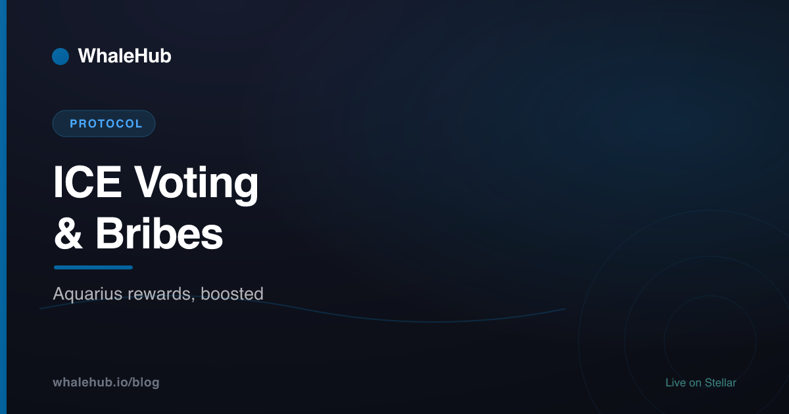

ICE Voting & Bribes on Aquarius, Explained

ICE is the non-transferable voting power you get by locking AQUA on Aquarius, Stellar's main liquidity-incentive protocol. ICE votes decide which AMM pools receive AQUA emissions, so projects "bribe" voters — paying rewards to attract votes to their pool. It's the same vote-market dynamic that drove the Curve and Convex wars on Ethereum, running on a network that settles in about five seconds for a fraction of a cent.
What is ICE?
ICE is the voting power you receive when you lock AQUA inside the Aquarius protocol. Unlike AQUA, it is non-transferable — you cannot trade or send it — and it decays as your lock nears expiry. You spend ICE by voting AQUA emissions toward specific liquidity pools, which is how Aquarius decides where rewards flow.
AQUA is the token of Aquarius, the liquidity-incentive layer that launched on Stellar in 2021. Holding AQUA on its own earns nothing. To participate in governance you lock it, and in return the protocol mints ICE to your account.
Two properties make ICE behave differently from an ordinary token. First, it is bound to your wallet — it can't be moved, so voting power can't be bought outright on a market. Second, longer locks generally grant more ICE, which rewards commitment over quick in-and-out positions. That combination is what turns AQUA from a passive holding into an active lever over Stellar's liquidity incentives. For the wider picture, see What Is the AQUA Token?
How ICE votes direct emissions
Aquarius emits AQUA rewards to liquidity pools each epoch, and ICE holders vote on how those emissions are split. Pools that attract the most ICE votes earn the largest share of AQUA rewards. So voting is not symbolic — it literally moves real yield toward the pools you back, which is why votes are worth competing for.
Think of it as a recurring budget allocation. There is a pool of AQUA emissions to hand out, and ICE is the ballot that decides the split. If a pool wins a large fraction of the vote, liquidity providers in that pool collect a large fraction of the emissions on top of their trading fees.
Because the vote resets each cycle, the "best" pool to back can shift from epoch to epoch. Keeping up means tracking where votes and bribes are concentrating, then re-voting — work most individual holders won't do consistently. We walk through the underlying pool mechanics in Aquarius AMM Explained.
The Aquarius bribe market
A bribe is a reward a project deposits to attract ICE votes to its pool. Voters who back that pool collect a share of the bribe in addition to AQUA emissions. It's an open, permissionless incentive market: a project that wants deep liquidity pays voters directly instead of, or alongside, running its own rewards program.
The logic is straightforward. Suppose a new project wants a liquid market for its token. Rather than emit its own rewards forever, it can post a bribe on Aquarius. Voters redirect ICE to that pool to capture the bribe; the extra votes pull more AQUA emissions in; the higher combined yield attracts liquidity providers; and the project gets the deep, tradable market it wanted.
For voters, bribes are simply an added revenue stream. You were going to vote anyway, so backing the pool that pays the highest combined return — emissions plus bribe — is the rational move. The catch is the same as before: finding that pool each epoch and claiming across markets takes attention and repeated transactions.
Why it's the Curve/Convex wars on Stellar
On Ethereum, Curve let locked-token voters direct emissions, so projects competed by bribing voters for liquidity — the "Curve wars." Convex then aggregated that locked voting power so small holders could share whale-tier influence. Aquarius recreates the same vote-and-bribe market on Stellar, and WhaleHub plays the aggregator role Convex played.
The parallel is close because the incentive structure is the same. A protocol emits rewards; a locked, non-transferable token controls where those rewards go; and an open bribe market forms because directing emissions is valuable. Whoever controls the most voting power controls the most yield — so the natural next step is an aggregator that pools everyone's votes.
That is precisely where WhaleHub sits. It is often described as "Convex for Stellar": instead of thousands of small holders each locking, voting, and claiming alone, WhaleHub concentrates their ICE into one block and does the work once, at scale. If you're new to the broader ecosystem, our Stellar DeFi guide maps how these pieces fit together.
ICE vs raw AQUA
The distinction between simply holding AQUA and locking it for ICE is where most of the value decisions live:
| Property | Raw AQUA | ICE (locked AQUA) |
|---|---|---|
| Transferable | Yes — trade or send freely | No — bound to your wallet |
| Voting power | None | Directs AQUA emissions to pools |
| Earns bribes | No | Yes — a share for pools you back |
| Time factor | None | Longer locks grant more; decays near expiry |
| Liquidity | Fully liquid | Locked until the term ends |
Now compare the two ways to actually use that voting power — going it alone versus routing through an aggregator:
| Who does the work | Solo voter | WhaleHub |
|---|---|---|
| Voting weight | Your ICE only — small on its own | Aggregated ICE from all stakers — whale-tier |
| Track best market | You research and re-vote each epoch | Handled for the whole pool |
| Claim emissions + bribes | Manual, per market, repeated | Backend harvests ~every 30 min |
| Reinvesting | You re-lock manually | Auto — reinvested into more ICE + POL |
| You receive | Whatever you personally captured | Proportional share, distributed as BLUB |
How WhaleHub aggregates ICE
WhaleHub aggregates ICE voting power from every staker into a single large block, votes it toward the highest-yielding Aquarius market, and harvests the AQUA emissions plus any bribes. The backend claims rewards roughly every 30 minutes, distributes them to stakers as BLUB, and reinvests a portion into more ICE and protocol-owned liquidity.
When you stake AQUA with WhaleHub, 90% stays in the staking contract, queued for ICE governance locking, and 10% goes toward liquidity-pool deposits. For every 1 AQUA you lock, 1.0 BLUB is minted to your staking balance as a liquid receipt — BLUB is a floating, market-priced token, minted 1 : 1 on stake but not redeemable for AQUA.
The payoff is scale. A lone holder with a modest AQUA balance barely moves a vote and burns time claiming across markets each epoch. Thousands of holders pooled together wield voting weight no single account could, and the tedious part — voting, harvesting, reinvesting — runs automatically in the background. You get a proportional slice of everything the block earns without touching a ballot.
The flywheel, step by step
Here is the full loop, from your deposit to the rewards landing back in your balance — the "glass box" of how aggregated ICE compounds:
1. STAKE You lock AQUA → receive BLUB 1:1 as a liquid receipt
(90% queued for ICE locking, 10% for pool liquidity)
2. AGGREGATE WhaleHub pools ICE from every staker into one
whale-tier voting block
3. VOTE That block votes AQUA emissions toward the
highest-yielding Aquarius market this epoch
4. HARVEST Backend claims AQUA emissions + bribes from the
chosen market (~every 30 minutes)
5. DISTRIBUTE Rewards are swapped to BLUB and paid to stakers
in proportion to their share
6. REINVEST A portion buys more ICE and grows protocol-owned
liquidity (POL) → step 2 gets stronger next epochEach turn of the loop makes the next one bigger: more reinvested ICE means a heavier vote, a heavier vote captures more emissions and bribes, and more protocol-owned liquidity deepens the markets WhaleHub earns in. Stakers claim their accumulated BLUB rewards, with a 7-day cooldown between claims. To see how the compounding cadence works elsewhere in the protocol, read Auto-Compounding Explained.
ICE turns AQUA from an idle holding into a lever over Stellar's liquidity incentives, and the bribe market puts a real price on that lever. The mechanics are powerful but genuinely tedious to run solo — which is exactly the gap an aggregator fills. Understand ICE, understand bribes, and the rest of the Aquarius economy starts to make sense.
Frequently asked questions
What is ICE on Stellar?
ICE is the non-transferable voting power you receive when you lock AQUA in the Aquarius protocol. It can't be sold or sent to another wallet, and it decays as your lock approaches expiry. You use ICE to vote AQUA emissions toward specific liquidity pools.
What are Aquarius bribes?
A bribe is a reward a project deposits to attract ICE votes to its liquidity pool. Voters who back that pool earn a share of the bribe on top of AQUA emissions. It's an open incentive market where projects pay for votes to bootstrap liquidity.
How is ICE different from raw AQUA?
AQUA is a transferable token you can trade or hold. ICE is locked voting power minted when you lock AQUA — it is non-transferable, decays over time, and directs emissions. Holding AQUA earns nothing on its own; locking it for ICE lets you vote and collect bribes.
Why is Aquarius voting compared to the Curve wars?
Like Curve on Ethereum, Aquarius lets locked-token voters direct emissions, so projects compete by bribing voters to win liquidity. WhaleHub plays the aggregator role Convex played on Curve — pooling ICE so small holders get whale-tier voting weight.
How does WhaleHub use ICE?
WhaleHub aggregates ICE from all stakers into one large voting block, votes it toward the highest-yielding Aquarius market, and harvests the AQUA emissions plus bribes. The backend claims rewards about every 30 minutes, distributes them as BLUB, and reinvests into more ICE.
Can I claim ICE rewards myself as a small holder?
You can, but a small AQUA holder has negligible voting weight and pays friction to lock, vote each epoch, and claim. Pooling with others through WhaleHub gives you a proportional share of whale-tier voting power and the bribes it earns, with no manual voting.
Turn your AQUA into whale-tier votes
Stake AQUA, get BLUB 1:1, and let WhaleHub's aggregated ICE capture the emissions and bribes for you.
Launch the appThis article is for educational purposes only and is not financial advice. DeFi involves risk, including the potential loss of capital. Do your own research and consult a qualified professional before making investment decisions.